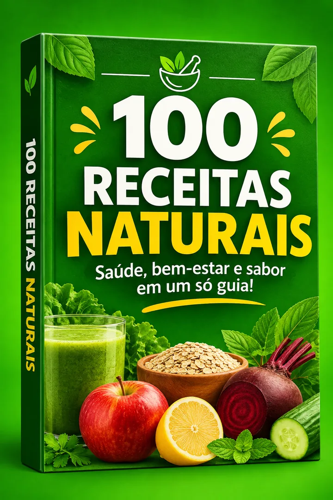

100 Receitas Naturais
Organizado por momento do dia: cafés da manhã e lanches, almoços completos e jantares práticos. Cada receita traz ingredientes, modo de preparo numerado, lista de compras e uma dica de aproveitamento.
É essa decisão que transforma “hoje eu cozinho” em mais um pedido de delivery. O guia entrega a resposta pronta: receitas de 5 a 10 minutos, cada uma com ingredientes, modo de preparo e lista de compras.
Material de educação culinária · Não substitui acompanhamento médico ou nutricional.

O guia principal resolve a pergunta das 18h40. Os três bônus cobrem o resto do dia — manhã, tarde e a compra da semana — para você não voltar ao delivery na quarta-feira.
Organizado por momento do dia: cafés da manhã e lanches, almoços completos e jantares práticos. Cada receita traz ingredientes, modo de preparo numerado, lista de compras e uma dica de aproveitamento.
Cafés da manhã reforçados, vitaminas e smoothies e lanches para a fome que chega antes do jantar. Cada receita combina um carboidrato de qualidade, uma proteína e uma fruta — e o guia fecha com a lista de compras em uma página.
Café da manhã com fibras, sucos e vitaminas, e pratos leves com legumes e grãos. Ingredientes de mercado de bairro, com lista de compras organizada por setor do mercado.
Bebidas hidratantes para deixar prontas na jarra, pratos de panela que rendem almoço e jantar e lanches de tarde. Traz lista de compras e trocas de ingredientes.
Não é falta de receita. É a mesma pergunta, na mesma hora, com o mesmo cansaço — e cada dia sem resposta tem um preço.
Abrir a geladeira, abrir o aplicativo, comparar, desistir. Depois, mais 25 minutos cozinhando o que sobrou de opção.
Três pedidos no mês custam mais que o guia inteiro — e continuam custando no mês seguinte, sem deixar nada pronto para a próxima semana.
Compra sem plano vira desperdício: o cheiro-verde que murcha, a abóbora que sobra, o pacote aberto pela metade.
O delivery não venceu por ser mais gostoso. Venceu porque estava decidido.
É o formato exato de cada uma das 145 receitas: ingredientes em medida caseira, preparo numerado, lista de compras e uma dica.
Quantidades em xícara e colher, sem item difícil de encontrar.
Passos numerados e curtos, do começo ao prato pronto.
Com caixinhas para marcar o que já está em casa.
Como variar, conservar ou substituir um ingrediente.
Ingredientes: 1/2 xícara de aveia em flocos · 1 xícara de leite ou bebida de soja sem açúcar · 1 banana madura amassada · canela a gosto · 1 colher (sopa) de chia.
Modo de preparo: misture a aveia e o leite em uma panela; cozinhe em fogo baixo por 4 a 6 minutos, mexendo até engrossar; acrescente a banana e a canela e finalize com chia.
Se essa receita já resolveu o seu café da manhã, o guia inteiro funciona assim: 145 respostas curtas, com a lista de compras já feita.

Pagamento único. O acesso é enviado por e-mail logo após a confirmação da compra.
Checkout seguro Cakto · Pix, cartão de crédito e carteiras digitais
O acesso é enviado para o e-mail informado no checkout, logo após a confirmação do pagamento. No mesmo e-mail você recebe o link com o guia principal e os três bônus.
As receitas foram escritas para quem cozinha pouco: ingrediente medido em xícara e colher, passo a passo numerado e nenhuma técnica que exija prática. Se você sabe acender o fogo, consegue seguir.
As quantidades são caseiras e fáceis de reduzir pela metade. Os pratos de panela e de forno do bônus Rotina Leve rendem almoço e jantar, o que ajuda quem cozinha para uma pessoa.
Não. É pagamento único de R$ 19,90, sem renovação. O material comprado fica com você.
Não. São quatro arquivos em PDF, para ler no celular, no computador ou imprimir em casa.
Aqui a resposta já vem montada: cada receita tem a sua lista de compras e uma dica de substituição, as 145 estão organizadas por momento do dia e os bônus cobrem a compra da semana. Você não escolhe receita: abre na página e faz.
Não. As receitas usam panela, frigideira, assadeira e utensílios básicos de cozinha.
O checkout aceita Pix, cartão de crédito e carteiras digitais. As opções disponíveis aparecem na tela de pagamento.
Aviso importante: este conteúdo é informativo e não substitui acompanhamento médico ou nutricional. Nenhum alimento isolado “queima gordura”, “desintoxica” ou trata doenças. As receitas ajudam a ampliar a variedade alimentar e podem apoiar hábitos compatíveis com uma rotina saudável, mas resultados dependem de muitos fatores e variam de pessoa para pessoa.